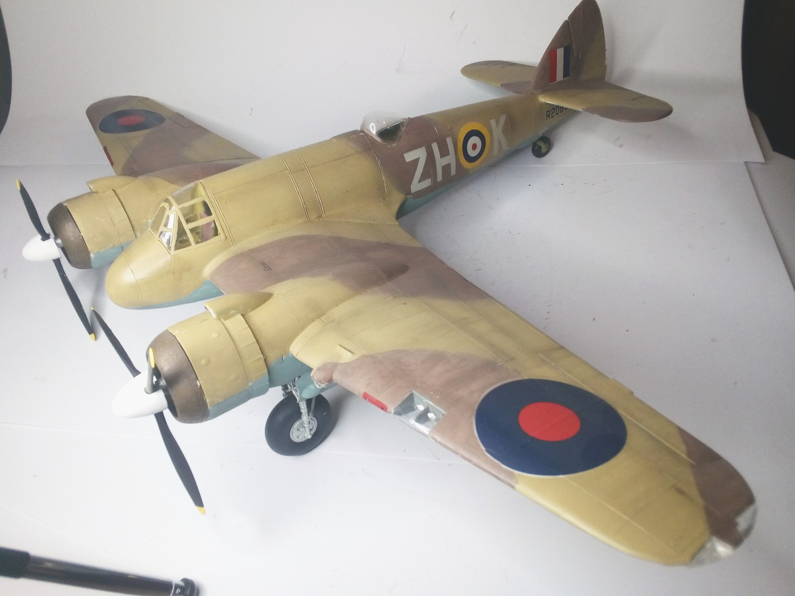
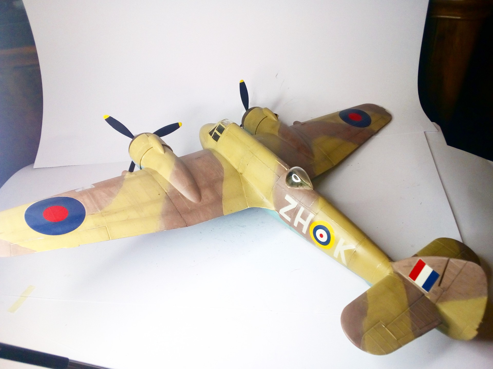
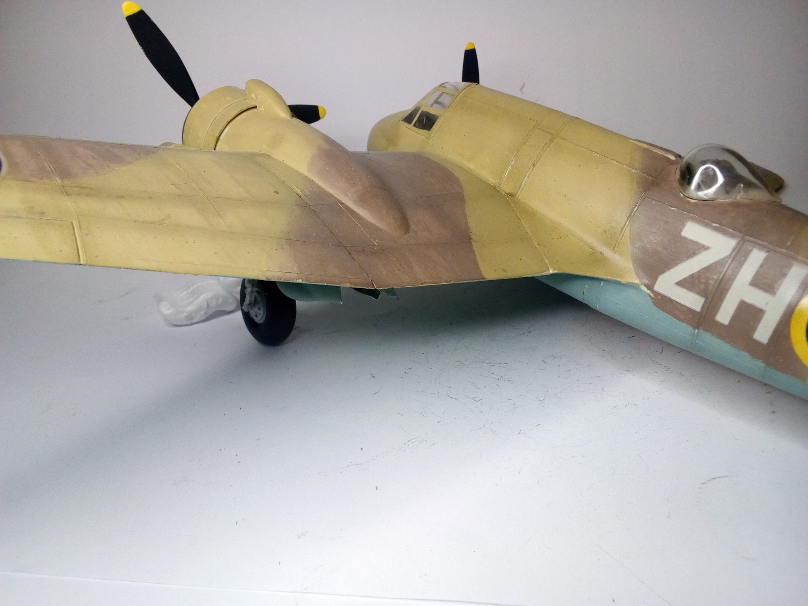

Aerei · scale model archive
Bristol Beaufighter
Bristol Beaufighter — Kit: Revell, Scale: 1/32. Impressive model size. Actually, no 'ZH' squadron code exists, 'ZK' was 25th Sqn Sep '4o - Nov '42 but…

Photo gallery


English description
Impressive model size. Actually, no 'ZH' squadron code exists, 'ZK' was 25th Sqn Sep '4o - Nov '42 but operating from England so camo would not hold.
#1/32 #Revell #Beaufighter
Descrizione italiana
Modello di dimensioni notevoli. In realtà non risulta esistere alcun codice di squadrone “ZH”; “ZK” apparteneva al 25th Sqn tra settembre 1940 e novembre 1942, ma operava dall’Inghilterra, quindi quella mimetica non sarebbe corretta.